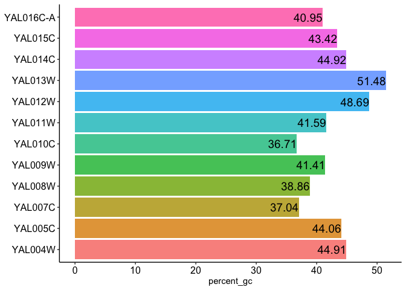

Fasta sequence manipulation is required while performing gene set or genome-wide analysis in RNASeq and ChIPSeq. Sequences of group of genes belonging to a pathway or biological term helps to determine the motifs/signature sequences associated with those genes. It also helps to predict regulators for differentially enriched genes. fastaR provides different ways to manipulate and gather information from the set of sequences. For instance, summary of input fasta file (fa_summary) or percentage of GC in given sequences (fa_percent_GC). Additionally, gene list specific sequences (fa_some_records) or promoters for given genes can also be fetched (get_promoter_from_feature). Together, fastaR provides easy way to analyze and manipulate sequences with minimal input of a feature file (bed or gff) and/or reference genome file (.fa or .fasta).
faUtils
fa_some_records()
# Input list of genes myGenelist <- system.file("exdata", "Sc_myGenelist.txt", package = "fastaR") myGenelist <- scan(myGenelist, what="character", sep=NULL) head(myGenelist) #> [1] "YDR343C" "YPL122C" "YCL066W" "YKR014C" "YHL018W" "YDR175C" # Reference fasta sequence to be subsetted ref_fasta <- system.file("exdata", "Sc_nucl_R64-2-1.fasta", package = "fastaR",mustWork = TRUE) # Function fastaR::fa_some_records(gene_list=myGenelist, fasta_file=ref_fasta, outfile="sc_myGenelist.fa") #> A BStringSet instance of length 0
fa_size()
ref_fasta <- system.file("exdata", "Sc_nucl_R64-2-1.fasta", package = "fastaR") cc <- fastaR::fa_size(fasta_file=ref_fasta) head(cc) #> # A tibble: 6 x 2 #> Seq_id Length #> <chr> <int> #> 1 YAL001C 3483 #> 2 YAL002W 3825 #> 3 YAL003W 621 #> 4 YAL004W 648 #> 5 YAL005C 1929 #> 6 YAL007C 648
fa_summary()
ref_fasta <- system.file("exdata", "Sc_nucl_R64-2-1.fasta", package = "fastaR") fs <- fastaR::fa_summary(fasta_file=ref_fasta) print(t(fs)) #> [,1] #> num_of_seq 25.00 #> min 186.00 #> max 4071.00 #> mean 1604.64 #> median 1218.00 #> percent_gc 39.86
fa_percent_GC()
- for more than 20 sequences
ref_fasta <- system.file("exdata", "Sc_nucl_R64-2-1.fasta", package = "fastaR") ff <- fastaR::fa_percent_GC(fasta_file=ref_fasta) head(ff) #> # A tibble: 6 x 2 #> names percent_gc #> <chr> <dbl> #> 1 YAL001C 37.1 #> 2 YAL002W 37.2 #> 3 YAL003W 44.6 #> 4 YAL004W 44.9 #> 5 YAL005C 44.1 #> 6 YAL007C 37.0
- for less than 20 sequences
ref_fasta <- system.file("exdata", "Sc_nucl_subset.fa", package = "fastaR") ft <- fastaR::fa_percent_GC(fasta_file=ref_fasta)

head(ft) #> # A tibble: 6 x 2 #> names percent_gc #> <chr> <dbl> #> 1 YAL004W 44.9 #> 2 YAL005C 44.1 #> 3 YAL007C 37.0 #> 4 YAL008W 38.9 #> 5 YAL009W 41.4 #> 6 YAL010C 36.7
getUtils
get_fasta_from_bed()
# path to bed (.bed) file bed_file_in <- system.file("exdata","Sc_ref_genes.bed", package = "fastaR") # path to reference genome sequence ref_fasta <- system.file("exdata", "Sc_ref_genome.fasta", package = "fastaR") fastaR::get_fasta_from_bed(bedFile=bed_file_in, fasta_file=ref_fasta, write_output=FALSE) #> GRanges object with 6 ranges and 2 metadata columns: #> seqnames ranges strand | name score #> <Rle> <IRanges> <Rle> | <character> <numeric> #> [1] chrI 336-649 + | YAL069W <NA> #> [2] chrI 539-792 + | YAL068W-A <NA> #> [3] chrI 1808-2169 - | YAL068C <NA> #> [4] chrI 2481-2707 + | YAL067W-A <NA> #> [5] chrI 7236-9016 - | YAL067C <NA> #> [6] chrI 10092-10399 + | YAL066W <NA> #> ------- #> seqinfo: 2 sequences from an unspecified genome; no seqlengths #> A DNAStringSet instance of length 573 #> width seq names #> [1] 314 TGATCGTAAATAACACACACGT...GGCGGTCCCAAATATTGTATAA YAL069W #> [2] 254 TGCACGGCACTTGCCTCAGCGG...ACTTTTCAACAATAATACATAA YAL068W-A #> [3] 362 ATGGTCAAATTAACTTCAATCG...GTATCTACACTATCGCAAACTA YAL068C #> [4] 227 TGCCAATTATAGGGGTGCCGAG...GTTGGGAGTCGTATACTGTTAG YAL067W-A #> [5] 1781 ATGTATTCAATTGTTAAAGAGA...TATCAGTATCTGATGAAAAATA YAL067C #> ... ... ... #> [569] 221 ATGGAACTTTTTATACCTTGCC...GGTCCGCGAAAACTTCCGGATA YBR298C-A #> [570] 1754 TGACTATTTCTGATCATCCAGA...TAGAATCTACCTCGTCAAATAA YBR299W #> [571] 497 ATGGCGGCAACACCAGCAGCGA...GCCACCTAATCTTTGTGCTCTA YBR300C #> [572] 362 TGGTCAAACTAACTTCAATCGC...TATCTACACTATCGCAAACTAG YBR301W #> [573] 1139 ATGAAAGAGAATGAACTTAAAA...GCAGTGAGGTGCTCTTAGTGTA YBR302C
get_promoter_from_feature()
# path to reference sequence file ref_fasta <- system.file("exdata", "Sc_ref_genome.fasta", package = "fastaR") # for gff as feature file feature_file_in <- system.file("exdata","Sc_ref_genes.gff", package = "fastaR") pr <- fastaR::get_promoter_from_feature(feature_file=feature_file_in, fasta_file=ref_fasta, write_outputfasta= FALSE, write_promoterbed= FALSE, upstream_bp= 1000, downstream_bp= 100) #> GRanges object with 6 ranges and 1 metadata column: #> seqnames ranges strand | names #> <Rle> <IRanges> <Rle> | <character> #> [1] chrI 151067-152166 - | YAL001C #> [2] chrI 142707-143806 + | YAL002W #> [3] chrI 141174-142273 + | YAL003W #> [4] chrI 139760-140859 + | YAL004W #> [5] chrI 141332-142431 - | YAL005C #> [6] chrI 138246-139345 - | YAL007C #> ------- #> seqinfo: 2 sequences from an unspecified genome; no seqlengths pr #> A DNAStringSet instance of length 581 #> width seq names #> [1] 1100 ACTTGTAAATATATCTTTTATT...ATGTCTCATTCTCCTTTTCGGC YAL001C #> [2] 1100 TTCCAAGGCCGATGAATTCGAC...GAATTTAGATCGTATACCCAAT YAL002W #> [3] 1100 CTTCATGTCAGCCTGCACTTCT...GGGTATGTTCCGATTTAGTTTA YAL003W #> [4] 1100 CCAATTTGTCACCAGCTTCAGA...ACCCAAGTCGAAAATCAAGACG YAL004W #> [5] 1100 CACTCATATCGGGGGTCTTACT...ATTGCCAACGATCAAGGTAACA YAL005C #> ... ... ... #> [577] 1100 GTGCGTGAAGGAGAAAACTTCG...TTACGTTGTTTGTATCATCCCA YBR298C-A #> [578] 1100 TTCTTACCTTGCTCCTCCATCT...TTTAAAGACTCCAATAACGATG YBR299W #> [579] 1100 CATGGCGTGGCTTGCTCCACAC...ACAAGAAATAGTGAAATGAAAG YBR300C #> [580] 1100 AAGAAAAACACATGACCAGAAT...TCTGACGAAAGAGTCAACTTGG YBR301W #> [581] 1100 AATTTATATACACTTATGCCAA...CTACCTCAAGATCTTTTCAGAA YBR302C # for bed as feature file feature_file_in <- system.file("exdata","Sc_ref_genes.bed", package = "fastaR") pr <- fastaR::get_promoter_from_feature(feature_file=feature_file_in, fasta_file=ref_fasta, write_outputfasta= FALSE, write_promoterbed= FALSE, upstream_bp= 1000, downstream_bp= 100) #> GRanges object with 6 ranges and 1 metadata column: #> seqnames ranges strand | names #> <Rle> <IRanges> <Rle> | <character> #> [1] chrI 1-435 + | YAL069W #> [2] chrI 1-638 + | YAL068W-A #> [3] chrI 2070-3169 - | YAL068C #> [4] chrI 1481-2580 + | YAL067W-A #> [5] chrI 8917-10016 - | YAL067C #> [6] chrI 9092-10191 + | YAL066W #> ------- #> seqinfo: 2 sequences from an unspecified genome; no seqlengths pr #> A DNAStringSet instance of length 573 #> width seq names #> [1] 435 CCACACCACACCCACACACCCA...CTGATTTTACGTACGCACACGG YAL069W #> [2] 638 CCACACCACACCCACACACCCA...ATATCTCATTCGGCGGTCCCAA YAL068W-A #> [3] 1100 CATCCAAGAATTTTATCTACGA...TCTGACGAAAGAGTCAACTTGG YAL068C #> [4] 1100 AACGAAGCAGCGACTCATTTTT...ATATCCGAATTTTAGATTTGGA YAL067W-A #> [5] 1100 TATATCCGATTCATTCTTCTTT...GTGGAAGACCTGCCAGATGACT YAL067C #> ... ... ... #> [569] 1100 GTGCGTGAAGGAGAAAACTTCG...TTACGTTGTTTGTATCATCCCA YBR298C-A #> [570] 1100 TCTTACCTTGCTCCTCCATCTC...TTAAAGACTCCAATAACGATGG YBR299W #> [571] 1100 CATGGCGTGGCTTGCTCCACAC...ACAAGAAATAGTGAAATGAAAG YBR300C #> [572] 1100 AGAAAAACACATGACCAGAATG...CTGACGAAAGAGTCAACTTGGT YBR301W #> [573] 1100 AATTTATATACACTTATGCCAA...CTACCTCAAGATCTTTTCAGAA YBR302C
get_flank_from_feature()
flanks are different region in gene’s structure as illustrated below: 1. sequence upstream of start coordinate 2. sequence downstream of start coordinate 3. sequence downstream of end coordinate 4. upstream and downstream of start coordinate 5. upstream and downstream of end coordinate 6. upstream and downstream of feature/gene coordinates 7. middle region, i.e. distance (in bp) from start and end coordinate Start—–>ATGCGGATGCGGTC<——End
# path to reference sequence file ref_fasta <- system.file("exdata", "Sc_ref_genome.fasta", package = "fastaR") # for gff as feature file feature_file_in <- system.file("exdata","Sc_ref_genes.gff", package = "fastaR") ss <- fastaR::get_flank_from_feature(feature_file = feature_file_in, fasta_file = ref_fasta, flank_type = 2) #> GRanges object with 6 ranges and 1 metadata column: #> seqnames ranges strand | gene_id #> <Rle> <IRanges> <Rle> | <character> #> [1] chrI 151157-151166 - | YAL001C #> [2] chrI 143707-143716 + | YAL002W #> [3] chrI 142174-142183 + | YAL003W #> [4] chrI 140760-140769 + | YAL004W #> [5] chrI 141422-141431 - | YAL005C #> [6] chrI 138336-138345 - | YAL007C #> ------- #> seqinfo: 2 sequences from an unspecified genome; no seqlengths ss #> A DNAStringSet instance of length 581 #> width seq names #> [1] 10 ATGGTACTGA YAL001C #> [2] 10 ATGGAGCAAA YAL002W #> [3] 10 ATGGCATCCA YAL003W #> [4] 10 ATGGGTGTCA YAL004W #> [5] 10 ATGTCAAAAG YAL005C #> ... ... ... #> [577] 10 ATGGAACTTT YBR298C-A #> [578] 10 ATGACTATTT YBR299W #> [579] 10 ATGGCGGCAA YBR300C #> [580] 10 ATGGTCAAAC YBR301W #> [581] 10 ATGAAAGAGA YBR302C # for bed file as feature file feature_file_in <- system.file("exdata","Sc_ref_genes.bed", package = "fastaR") ss <- fastaR::get_flank_from_feature(feature_file = feature_file_in, fasta_file = ref_fasta, flank_type = 2) #> GRanges object with 6 ranges and 2 metadata columns: #> seqnames ranges strand | name score #> <Rle> <IRanges> <Rle> | <character> <numeric> #> [1] chrI 336-345 + | YAL069W <NA> #> [2] chrI 539-548 + | YAL068W-A <NA> #> [3] chrI 2160-2169 - | YAL068C <NA> #> [4] chrI 2481-2490 + | YAL067W-A <NA> #> [5] chrI 9007-9016 - | YAL067C <NA> #> [6] chrI 10092-10101 + | YAL066W <NA> #> ------- #> seqinfo: 2 sequences from an unspecified genome; no seqlengths ss #> A DNAStringSet instance of length 573 #> width seq names #> [1] 10 TGATCGTAAA YAL069W #> [2] 10 TGCACGGCAC YAL068W-A #> [3] 10 ATGGTCAAAT YAL068C #> [4] 10 TGCCAATTAT YAL067W-A #> [5] 10 ATGTATTCAA YAL067C #> ... ... ... #> [569] 10 ATGGAACTTT YBR298C-A #> [570] 10 TGACTATTTC YBR299W #> [571] 10 ATGGCGGCAA YBR300C #> [572] 10 TGGTCAAACT YBR301W #> [573] 10 ATGAAAGAGA YBR302C
get_random_sequences_from_fasta()
# load reference fasta ref_fasta <- system.file("exdata", "Sc_ref_genome.fasta", package = "fastaR") rr <- fastaR::get_random_sequences_from_fasta(fasta_file = ref_fasta, numberOfRandomSequences = 100, lengthOfRandomSequence = 500) #> GRanges object with 6 ranges and 1 metadata column: #> seqnames #> <Rle> #> [1] chrII [org=Saccharomyces cerevisiae] [strain=S288C] [moltype=genomic] [chromosome=II] #> [2] chrII [org=Saccharomyces cerevisiae] [strain=S288C] [moltype=genomic] [chromosome=II] #> [3] chrII [org=Saccharomyces cerevisiae] [strain=S288C] [moltype=genomic] [chromosome=II] #> [4] chrII [org=Saccharomyces cerevisiae] [strain=S288C] [moltype=genomic] [chromosome=II] #> [5] chrII [org=Saccharomyces cerevisiae] [strain=S288C] [moltype=genomic] [chromosome=II] #> [6] chrI [org=Saccharomyces cerevisiae] [strain=S288C] [moltype=genomic] [chromosome=I] #> ranges strand | names #> <IRanges> <Rle> | <factor> #> [1] 618816-619316 - | random_seq_1 #> [2] 135291-135791 + | random_seq_2 #> [3] 591756-592256 - | random_seq_3 #> [4] 123908-124408 + | random_seq_4 #> [5] 318119-318619 - | random_seq_5 #> [6] 92658-93158 + | random_seq_6 #> ------- #> seqinfo: 2 sequences from an unspecified genome; no seqlengths rr #> A DNAStringSet instance of length 100 #> width seq names #> [1] 501 AGTTCCTTTTGCCTTGCCGGCT...TTATACAGCCGTGCAACACCGT random_seq_1 #> [2] 501 TGTTCTTCCATAAATTGGAAAC...ATTTTCTTGTTTGGTTTTTATT random_seq_2 #> [3] 501 ACGACAAACAAGGTTTCCCAAT...TTGTCTGAAAGAAAGGCTGAAA random_seq_3 #> [4] 501 AGGCGCATAAAATCTCTCAGTG...AAATACCGTTATCAAAGTGGTA random_seq_4 #> [5] 501 ATAAGTTTCAATATACGTAAAG...TTCTGGAGCTTTGTTACATTGC random_seq_5 #> ... ... ... #> [96] 501 TTCATTTTTTGATATTCTCTTC...TTCCCAAATGATTAATATTAAT random_seq_96 #> [97] 501 AGAAGTTGACCCCAACATATCT...ACCCATTTAAAGAACTCCCACC random_seq_97 #> [98] 501 GCTTTCCAGTCATATAATCTAT...TTTGGCAACTTCATGCACATGT random_seq_98 #> [99] 501 CCGCAGGAAGGACCCCTCTCTG...CAGGATGGTCACGGTGCCATTC random_seq_99 #> [100] 501 ATATATTAACTGTCCATGAAGA...GGCTCTTTTAGTTCCAAGGCCT random_seq_100